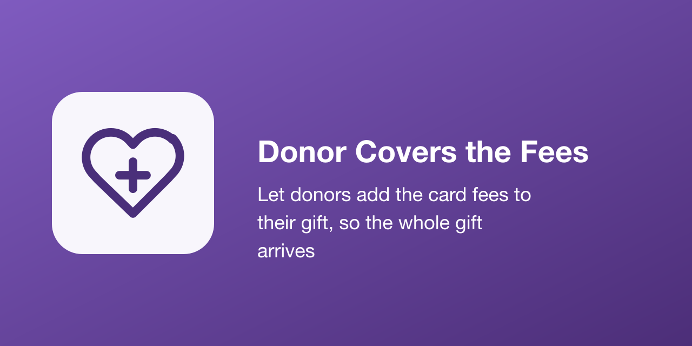

Card payments cost a percentage plus a few cents, so a $25 online gift arrives as a little less. Many donors are glad to make up the difference if asked.
This adds an unticked "I'll cover the processing fees" box to the website's Donation block, showing the exact extra amount. If the donor ticks it, the payment is grossed up so that, after the fees, the full gift is left.
The box shows "+$1.06" for the gift chosen, and updates as the amount changes.
Donors choose; nobody pays extra without noticing.
The browser only previews; the amount charged is calculated again when the payment starts.
Each payment records the gift and the fees covered separately, for receipts and reports.
Set the processing percentage and fixed amount in Website settings.
This module is free. Help installing, setting up or using it is available from Meskis Works with a support contract: sales@meskis.net.